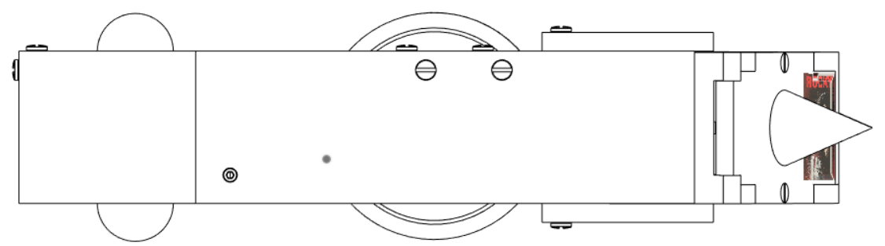

We. Build. Robots.
Welcome to Combat Robotics at Cornell, a third-year robotics team at Cornell University.
We believe that working in a competitive, supportive environment on a robotics team can help students grow as both engineers and leaders of the future. Our hope is to provide an outlet for excited students to engage with hands-on experience in mechanical, electrical, and computer engineering.

Who We Are
Across 4 colleges, our team draws from a wide pool of talented Cornellians to create an interdisciplinary spirit.
Our team has grown to facilitate more learning and collaboration from a large number of students.
We've spent years designing and building robots, and we're finally ready to take down the competition.